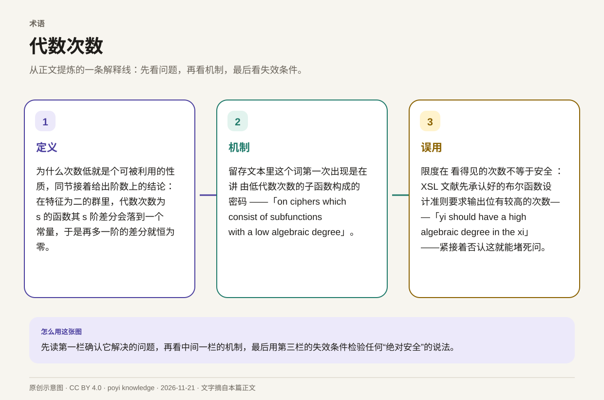

原理与机制
术语：代数次数（Algebraic Degree）。留存文本里这个词第一次出现是在讲由低代数次数的子函数构成的密码——「on ciphers which consist of subfunctions with a low algebraic degree」。也就是说，代数次数在这里刻画的不是整个密码，而是它的组成函数：把每个子函数看成一个多项式函数，它的次数就是这条分析线索要利用的量；同节接着把群的条件交代清楚，说在特征为二的群里，阶数与次数之间存在下面那种对应。

为什么重要
为什么次数低就是个可被利用的性质，同节接着给出阶数上的结论：在特征为二的群里，代数次数为 s 的函数其 s 阶差分会落到一个常量，于是再多一阶的差分就恒为零；该条目引用的那段正是这句话的收尾——「differential of a function of algebraic degree s is zero」。这条对应把次数与可预测的差分行为连起来，也是高阶差分与积分攻击关心它的原因；条目只转述文中印出的这条陈述，不由它推出对任何具体密码的保证。
应用与实例
用法的另一面是设计文档如何记它：Keccak 参考文档设了专门一节，标题即「Distinguishers exploiting low algebraic degree」，开头说该密码的轮函数与其逆函数的代数次数都低——分别是 2 与 3（那句里轮函数的名字在副本里把下标印成了空格，故只转述不复引），紧接着写下「This has been exploited in third-party cryptanalysis to construct a number of distinguishers.」下一小节 4.4.1 的标题给出这类区分器的名字：zero-sum distinguishers。文档另外记下唯一的非线性映射本身「has algebraic degree two」（2.3.1 节），也就是说，次数低在同一份文档里既是设计事实也是攻击面。
边界与攻击面
限度在看得见的次数不等于安全：XSL 文献先承认好的布尔函数设计准则要求输出位有较高的次数——「yi should have a high algebraic degree in the xi」——紧接着否认这就能堵死问题：它说没有理由排除另有形式为把 S 盒输入与输出放在一起的多元方程 P、却次数很低的关系，留存句给这类关系下的定语是「that are of low algebraic degree」，作者随后宣称这样的方程在 Rijndael 与 Serpent 里都大量存在，只是成因彼此不同。于是代数次数既是设计准则，也是攻击的入口：某个输出位自身次数高，仍可能与低次的隐式方程相连。
历史与背景
版本与脉络事实（按项目口径写在引号外）：该条目所据的这份文本是该系列的扩展摘要，留存页首的会议行印作 J.Daemen 与 V.Rijmen 主编的 FSE 2002、LNCS 2365、第 112 到 127 页、2002 年（页码范围里的连接号在副本中是乱码字形，故只转述；标题与出处记录里的连字符是转录写法）；文内又自陈更早的一次积分攻击是给在分组密码 Square 上的，并写「In FSE'97 an integral attack was given on the block cipher Square [5].」——这条自引把方法的源头定在 1997 年那次会话，而代数次数作为分析语言出现在这份 2002 年印本里。目录里记录这两篇论文的两条攻击行（积分攻击、XSL 攻击）都已通过复核并登记在 e14-standardization（该时代的 era.md 印作 1977-2001），该条目因此把时代轴与它们对齐；它此前登记的 e12-cold-war-info-theory 的时代文件印的是 1945-1975，早于这两篇文献，也与次数在这一语境里的用法不符。
逐步示例与核验
定义检查模型
上位概念 → 区别特征 → 正例 → 反例 → 易混边界。正例必须落在外延内；反例必须刚好跨过边界；同义词不能代替定义。
参考出处
- Wikipedia search entry for 代数次数. https://zh.wikipedia.org/w/index.php?search=%E4%BB%A3%E6%95%B0%E6%AC%A1%E6%95%B0
- RFC 4949: Internet Security Glossary, Version 2. https://www.rfc-editor.org/rfc/rfc4949